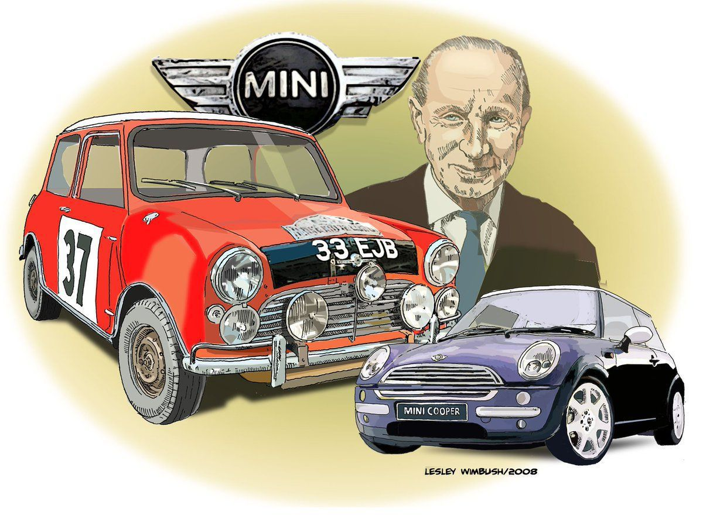
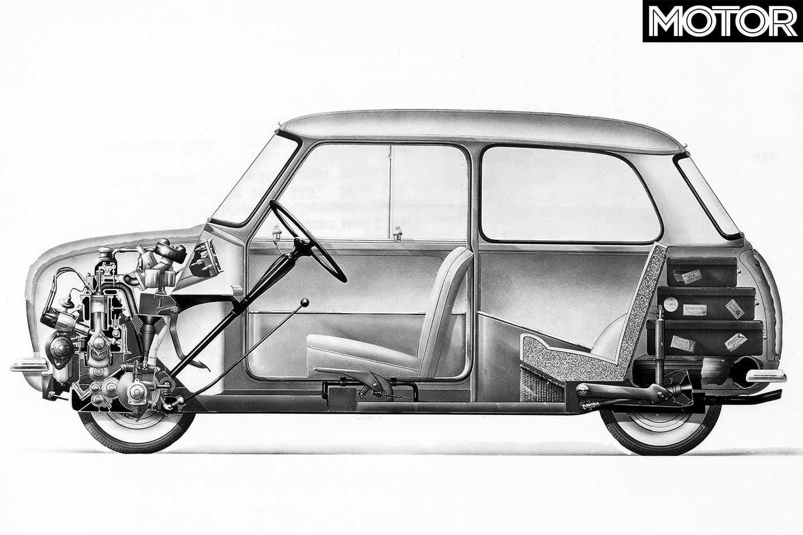

+++
title = "İkonik Arabalar: Mini"
seotitle="İkonik Arabalar: Mini Tarihi"
description=""
url="sayi-11/ikonik-arabalar-mini"
aciklama="Mini bir İngiliz otomobili dendiği zaman akla gelen ilk otomobillerdendir. Mini bir otomobilden ne beklerseniz size fazlasını sunmaktadır. Mini, şehir yaşantısında dar sokaklardan bir gokart kullanırmışçasına eğlenceli bir kullanım sunarken aynı zamanda yıllardır ufak dokunuşlarla değişen ikonik tasarımıyla gözlerin üzerinizde olduğunu size hissettirir."
type="sayfa"
thumb="/img/ikonik-arabalar-mini-thumbnail.jpg"
date = "2021-07-10"
sayi=["11"]
sayfa="04"
yazar=["mucahit vasfi bas"]
tags= ["ana sayfa", "dergi", "ikonik"]
+++

<div class="container">
   <div class="row">
      <div class="col-md-6">
         <p>
            Mini bir İngiliz otomobili dendiği zaman akla gelen ilk
            otomobillerdendir. Mini bir otomobilden ne beklerseniz size
            fazlasını sunmaktadır. Mini, şehir yaşantısında dar sokaklardan bir
            gokart kullanırmışçasına eğlenceli bir kullanım sunarken aynı
            zamanda yıllardır ufak dokunuşlarla değişen ikonik tasarımıyla
            gözlerin üzerinizde olduğunu size hissettirir.
         </p>
      </div>
      <div class="col-md-6">
         {{}}
      </div>
   </div>

   <h3 id="mininin-doğuş-hikayesi">Mini&#39;nin doğuş hikayesi</h3>
   <div class="row">
      <div class="col-md-6">
         <p>
            1950’li yıllarda Mısır Süveyş kanalının kontrolünü ele almasıyla
            beraber petrol ihtiyacını Süveyş üzerinden karşılayan
            İngiltere&#39;de petrol krizi ortaya çıktı. Benzin aylık 15 litreyle
            sınırlı olmak üzere karneyle satılmaya başlandı.
         </p>
         <p>
            Petrol kriziyle beraber insanlar, büyük hacimli araçlarını
            kullanamadılar. İngiliz halkı kendilerine verilen aylık 15 litre
            petrol sınırına uyabilmek için alman üretimi Bubble car denilen
            araçları kullanmaya başladılar. Motosiklet motorundan üretilen
            gürültülü çalışan iki kişilik ve güvenliksiz araçlardı.
         </p>
         <p>
            1952 yılında Austin ve Morris adlı iki firmanın birleşmesiyle
            kurulan BMC’nin genel müdürü Leonard Lord halkın bu güvenliksiz ve
            gürültülü araçlara rağbet göstermesi karşısında endişeye kapıldı.
         </p>
         <p>
            Bunun üzerine BMC genel müdürü Leonard Lord, ufak ama 4 kişinin
            seyahat edebileceği az yakıt tüketen 4 silindirli bir motora sahip 4
            tekerlekli bir araç üretme kararı aldı.
         </p>
      </div>
      <div class="col-md-6">
         {{}}<small>Mikro Araç, Heinkel Kabine, 1957</small>
      </div>
   </div>

   <h3>Alec Issigonis</h3>
   <div class="row">
      <div class="col-md-6">
         <p>
            Mini’nin tasarımcısı <strong>Alec Issigonis</strong> 1906&#39;da
            İzmir’de doğmuştur. Issigonis erken yaşta otomobil mühendisi olmaya
            karar verdi. 1925-1928 yılları arasında Londra’da Battersea
            Polytechnic’te mühendislik okudu. 1928’de ilk olarak Londra’daki bir
            mühendislik firması olan Gillett’in tasarım ofisinde çalıştı.
            1934’te Issigonis, çalışmak üzere Coventry’deki Humber Ltd çizim
            ofisine davet edildi. Bu sıralarda bir arkadaşıyla birlikte özel bir
            kısa mesafe yarış otomobili yapmaya başladı.
         </p>
         <p>
            30 yaşındayken Morris Mühendislik Departmanı’nda çalıştı ve ilk
            başarısını Morris Minor’ın üretilmesiyle kutladı. Morris ve Austin
            1952 yılında British Motor Corporation’ı oluşturmak üzere
            birleştiğinde Issigonis şirketten ayrılmaya karar verdi. Daha sonra
            Avis’e geçerek lüks sedan otomobilin geliştirilmesinde çalıştı ancak
            proje maliyeti nedeniyle sonlandırmak zorunda kaldı. Issigonis bunun
            ardından British Motor Coperation’a geri döndü ve o dönem yaşanan
            birçok politik faktörün de etkisiyle büyük buluşunu gerçekleştirmeye
            yöneldi. Petrol krizi onun bir efsane olmasına katkı sağlayacaktı.
         </p>
      </div>
      <div class="col-md-6">
         {{}}<small>Issigonis ve ilk Miniler</small><br /><br />
         {{}}
      </div>
   </div>

   <h2 id="mini-tasarlanıyor">Mini Tasarlanıyor</h2>
   <div class="row">
      <div class="col-md-6">
         <p>
            Issigonis ekibine Jack Danils ve Chris Kingdom adında iki başarılı
            mühendis ve birkaç genç mühendisi dahil etti. Artık Mini
            tasarlanmaya hazırdı. Bir efsaneye göre Allec Issigonisin Mini’nin
            ilk çizimini bir peçeteye çizdi.
         </p>
         <p>
            Issigonisin bu tasarımı oldukça yenilikçiydi. Sıralı motora göre
            daha kısa krank mesafesi bulunan v motoru kullanarak motoru gövdeye
            90 derece çevirerek koymayı başarmıştır. Bu sayede alandan tasarruf
            edildi. İstenilen araç uzunluğuna iç hacimden ödün vermeden
            ulaşıldı. Önden motorlu ve önden çekiş sistemi sayesinde aracın
            performansı ve güvenliği arttırıldı. Arkaya güç iletimini sağlayan
            şafta ve diferansiyele gerek kalmadı ve maliyetleri düşürdü. Bu
            durum hem aracı hafifletirken aynı zamanda şaft tüneli olmadığı için
            aracın iç hacmini arttırdı.
         </p>
      </div>
      <div class="col-md-6">
         {{}}<small
            >Mini&#39;nin ilk eskizlerinden,
            <strong>Alec Issigonis</strong></small
         >
      </div>
   </div>

   <div class="row">
      <div class="col-md-6">
         <p>
            4 silindire sahip 848 cc kapasitesindeki bu motor 4 vitese sahipti.
            Saate 115 km hıza ulaşabilen bu motor günümüzde bize ne kadar yavaş
            gelse de o zamana göre gayet iyi bir hıza sahipti. Zaten Mini size
            en hızlı olmayı değil ister hızlı ister yavaş her sürüşten zevk
            almanızı sağlar. Bu araç 100 km de 6.2 litre benzin harcıyordu.
            Benzin tüketimi Bubble araçlara oldukça yakındı. Mini bu araçlara
            göre daha sessiz daha güvenli, oldukça iyi yol tutan ve 4 kişilik
            bir araçtı.
         </p>
      </div>
      <div class="col-md-6">
         {{}}
      </div>
   </div>

   <h3 id="miniye-üretim-onayı-geldi">Mini&#39;ye Üretim Onayı Geldi</h3>
   <div class="row">
      <div class="col-md-6">
         <p>
            1957 Haziran’da BMC genel müdürü Leonard Lord, ilk mini prototipini
            test etti ve seri üretime onay verdi. 1960 yılına gelindiği zaman
            Austin Seven Mini ve Morris Mini Minor adında iki model üretildi.
         </p>
         <p>
            İki farklı araç üretilmesinin sebebi bu iki markanın BMC çatısı
            altında birleşmeden önce kullanıcıların markalara olan
            bağlılıklarını kullanarak bu iki rakip markanın müşterilerini
            kendilerine çekmekti.
         </p>
         <p>
            Dünyanın ilk “Mini&quot;si olma unvanına sahip bu iki araç birkaç
            fark haricinde tamamen aynıydı.
         </p>
      </div>
      <div class="col-md-6">
         {{}}<small>Austin Mini Model 1, 1963</small>
      </div>
   </div>

   <h3 id="mini-asfaltta">Mini Asfaltta</h3>
   <div class="row">
      <div class="col-md-6">
         <p>
            Kompakt tasarıma sahip yatay yerleştirilmiş v motor sayesinde aracın
            %80 i yolculara ve bagaja kalıyordu. Bagaj açık şekilde hareket
            edebilmemizi sağlayan menteşeler sayesinde aracı adeta bir panelvan
            gibi kullanabiliyor ve normalde taşıyamayacağınız büyük ürünleri
            taşıyabiliyordunuz.
         </p>
         <p>
            Issigonis lastiklerin araç içerisindeki alanı kısıtlamasını
            istemiyordu. Dunlop’u 10 inç lastik üretmeye ikna etti ve lastikleri
            aracın en köşe noktalarına yakın konumlandırdı. Bu durum ilerleyen
            zamanlarda karting hissi denilen bu hissin temellerini sağlayacaktı.
         </p>
         <p>
            Araçta ağırlıktan tasarruf etmek için radyo, cam açma kolu ve
            emniyet kemeri dahi yoktu. Aracın minimum ağırlıkta olmasına ve
            maksimum yük taşıma kapasitesinde olmasına önem verildi. İlk seri
            üretim 1959’un başlarında piyasaya sürüldü. Mark (model) 1 Mini adlı
            bu araç 1967’ye kadar üretildi.
         </p>
      </div>
      <div class="col-md-6">
         {{}}
      </div>
   </div>

   {{}}
   <small>Mini Model 1 Kesiti</small>

   <h3 id="mini-tutkuya-dönüşüyor">Mini Tutkuya Dönüşüyor</h3>
   <div class="row">
      <div class="col-md-6">
         <p>
            Otomobil endüstrisinde Mini’nin başlattığı devrim fark ediliyordu.
            Fakat İngiliz halkının bu değişime alışması biraz zaman aldı.
            Mini&#39;yi görenler bu aracın 4 kişilik olabileceğine
            inanmıyorlardı. Ve 500 sterline satılan araçların kaliteli ve
            güvenli olabileceğine imkân vermiyorlardı.
         </p>
         <p>
            Zamanla aracı satın alan insanların kafasındaki soru işaretleri yok
            oldu. Kulaktan kulağa bu minik ama eğlenceli otomobilin namı
            yayılıyordu. BMC bu durumdan oldukça memnundu. 1960 yılında 116.000
            adet, 1961 yılında 157.000 adet mini satıldı.
         </p>
         <p>
            Mini, daha doğduğu günden itibaren bir ikon olacağını belli
            ediyordu. Sanatçılar, film yıldızları da Mini’ye duyarsız kalamadı
            ve onlar da bu araçtan satın aldı. Beatles, Mick Jagger, Steve
            McQueen ve Bridget Bardot gibi isimlerin Mini’si vardı. Hatta Ürdün
            Kralı Hüseyin, Monaco Prensesi Grace ve Prens Charles bile Mini
            satın alan kraliyet üyeleriydi. Diğer bir deyişle işçilerden sinema
            artistlerine, kraliyet üyelerinden futbolculara kadar herkes Mini
            satın alıp kullanabiliyordu.
         </p>
      </div>
      <div class="col-md-6">
         {{}}
       <small>Mr Bean (Rowan Atkinson)</small>
      </div>
   </div>

   <h3 id="mini-cooper-oluyor">Mini Cooper Oluyor</h3>
   <div class="row">
      <div class="col-md-6">
         <p>
            John Cooper o dönemlerde Cooper adlı otomotiv firmasının sahibiydi.
            Yarış otomobilleri de tasarlayan Cooper, Mini’de iyi bir yarış
            arabası potansiyeli gördü. Cooper yenilikçi yaklaşımlarıyla otomobil
            yarışı alanında duayen bir isim olarak görülüyordu. John Cooper
            yarış otomobillerinde motoru sürücünün arkasına koyan ilk kişiydi.
         </p>
         <p>
            Issigonis, Mini’nin gündelik kullanıma yönelik bir araç olduğunu
            düşünürken Cooper ise bu araçta yarış potansiyeli görüyordu. Cooper
            ile işbirliği yapmaya başlangıçta pek yanaşmayan Issigonis sonunda
            ikna oldu. Cooper bu araba ile ilgili vizyonunu Issigonis’e anlattı
            ve birlikte Mini Cooper’ı yaratmaya karar verdiler.
         </p>
         <p>
            1071 cc’lik S modeli,1963 yılında üretime geçti. Yine farklı
            yarışlar için gereken modifikasyonlara sahip özel modeller de
            üretildi. 1962 yılnda John Love, British Saloon Car şampiyonasında
            Mini Cooper ile birinci oldu.
         </p>
         <p>
            Aracın mütevazı görünümü ve sıkı performansı, polis teşkilatlarının
            da dikkatini çekti. İngiliz ve Avustralya polis teşkilatları Mini
            Cooper’dan hatırı sayılır bir miktar satın aldılar.
         </p>
      </div>
      <div class="col-md-6">
         {{}}

         <small>1965, bir Mini yarış arabası</small> <br /><br />
         {{}}
      </div>
   </div>

   <h3 id="monte-carlo"><strong>Monte carlo</strong></h3>
   <div class="row">
      <div class="col-md-6">
         <p>
            Mini Cooper S, Monte Carlo rallisine 1964-1967 arasında damgasını
            vurdu. Paddy Hopkirk’un 1963-1964 yıllarında bu araçla birincilik
            ipini göğüslemesi aracı tam bir fenomen haline getirdi. Bir yıl
            sonra Fin pilot Timo Makinen de kış yarışlarında binlerce
            kilometreyi sorunsuz geçerek birinci oldu. Üstelik yarışı
            bitiremeyen onlarca araç vardı. Mini’nin süper yol tutuşu herkesi
            şaşkına çeviriyordu.
         </p>
         <p>
            Mini’nin yarış başarısı sadece ralliyle sınırlı değildi. 1960’larda
            parkur yarışlarında da Mini efsanesi söz konusuydu.
         </p>
      </div>
      <div class="col-md-6">
         {{}}
      </div>
   </div>

   <h3 id="mini-artık-bir-bmw">Mini Artık Bir BMW</h3>
   <div class="row">
      <div class="col-md-6">
         <p>
            1994 yılında Mini resmi olarak artık bir BMW’ydi. Mini satışları
            düşmeye başlamıştı. Bu durum BMW&#39;nin pek hoşuna gitmiyordu. BMW
            taze bir başlangıç için klasik Mini’yi MINI olarak pazarlamaya
            başladı.
         </p>
         <p>
            Yeni MINI, 2000&#39;e sıkı bir giriş yaptı. Alman BMW, İngiliz
            Mini’ye taze kan oldu ve aracın satışlarını kademe kademe yükseltti.
         </p>
         <p>
            2001’de BMW sahipliğine üretilen ilk araç yeni hatchback MINI oldu.
            Premium fiyata sahip olan bu araç tasarım, sürüş ve malzeme kalitesi
            bakımından lig atladı. Cooper, Cooper S ve One adıyla piyasaya
            sunulan bu araçlara John Cooper Works (JCW) de dahil oldu. 2010
            yılında Countryman modeli piyasaya sürüldü.
         </p>
         <p>
            Şu ana kadar Mini ailesinin en büyük üyesi olan bu model
            Avusturya’da üretiliyor ve 4 çekiş özelliğine sahip.
         </p>
         <p>
            Yeni sahibinin vizyonu ve yaratıcılığı ile yepyeni bir hayata
            başlayan MINI’nin başarısında elbette İngiliz köklerinin payını
            yadsımak olmaz.
         </p>
      </div>
      <div class="col-md-6">
         {{}}{{}}
      </div>
   </div>

   <h3 id="geleceğin-minisi">Geleceğin Mini&#39;si</h3>
   <div class="row">
      <div class="col-md-6">
         <p>
            Mini günümüze ayak uydurarak tamamen elektrikli Mini Cooper E’yi
            piyasaya sürdü. Mini’nin sürüş karakterini taşıyan bu araç 2020
            yılından itibaren Formula E yarışında güvenlik aracı olarak
            pistlerde tur atmaktadır.
         </p>
         <p>
            Mini kullanıcıya bekleneni vermesi, uygun fiyatlı olması, sürüş
            zevki ve yıllardır ikonik tasarımında küçük değişikliklerle aracı
            modern bir araç yapmayı başarmasıyla bir ikon olmuştur. Mini
            yıllardır asfaltta kendini göstermektedir ve böyle giderse uzun
            yıllar daha onu sokaklarda göreceğiz gibi gözüküyor.
         </p>
      </div>
      <div class="col-md-6">
         {{}}
      </div>
   </div>

   <button
      class="btn markutbtn"
      data-target="#my-collapse"
      data-toggle="collapse"
      aria-expanded="false"
      aria-controls="my-collapse"
   >
      Kaynaklar
   </button>
   <div id="my-collapse" class="collapse">
      <pre> <small><code>  
    https://www.mini.com.tr/tr_TR/home/news/simge-haline-gelmis-bir-otomobilin-yaraticisi-alec-issigonis.html

    https://www.whichcar.com.au/features/2016-mini-jcw-vs-1965-mini-cooper-1275-s
    
    https://tr.motorsport.com/formula-e/news/formula-e-yeni-mini-formula-e-guvenlik-aracini-tanitti/5988725/
    
    https://tr.motor1.com/news/358741/2019-mini-cooper-se-resmi/
    
    https://alchetron.com/Mini
    
    https://www.yeniisfikirleri.net/mini-cooper-kurulus-hikayesi/
    
    https://primotipo.com/2019/03/01/cooper-s/
     </code></small></pre>
   </div>
</div>
